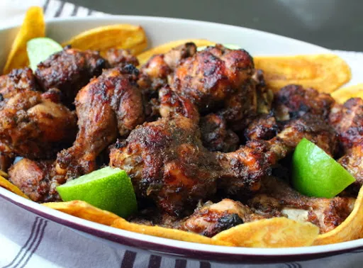

Jerk Chicken Wings

The perfect dish for a summer night
A great savory tangy dish to keep the family full and happy as well as your friends too
Ingredients
- 1/2 yellow onion, chopped
- 3 habanero peppers, seeded and chopped
- 1/2 cup green onions, sliced
- 1/3 cup lime juice
- 3 tablespoons soy sauce
- 6 cloves garlic
- 2 tablespoons fresh thyme leaves
- 2 tablespoons brown sugar
- 2 tablespoons vegetable oil
- 1 tablespoon kosher salt
- 2 teaspoons ground black pepper
- 2 teaspoons ground allspice
- 1 teaspoon dried thyme
- 1/2 teaspoon ground cinnamon
- 1/2 teaspoon ground cumin
- 1/2 teaspoon freshly grated nutmeg
- 3 pounds chicken wing drumettes
- cooking spray
Instructions
- Place yellow onion, habanero peppers, green onions, lime juice, soy sauce, garlic, fresh thyme, brown sugar, oil, salt, black pepper, allspice, dried thyme, cinnamon, cumin, and nutmeg into a blender. Blend until marinade is completely smooth.
- Place chicken drumettes into a large bowl. Pour marinade over chicken and toss to coat completely. Cover the bowl with plastic wrap and marinate in the refrigerator for at least 8 hours to overnight.
- Preheat the oven to 450 degrees F (230 degrees C). Line a baking sheet with aluminum foil and coat with cooking spray.
- Arrange chicken evenly on the prepared baking sheet; reserve marinade in the bowl.
- Bake in the preheated oven for 25 minutes. Brush 1/2 of the reserved marinade onto chicken, then turn over. Bake for 15 minutes.
- Turn chicken over and brush with remaining reserved marinade. Continue baking until tender and caramelized, 10 to 15 more minutes. An instant-read thermometer inserted near the bone should read at least 165 degrees F (74 degrees C). Rest chicken on the baking sheet for 5 minutes before removing to a serving platter.
Note: You can marinate the wings for 2 hours at room temperature, turning every 15 minutes, instead of marinating in the refrigerator overnight.
Return Home